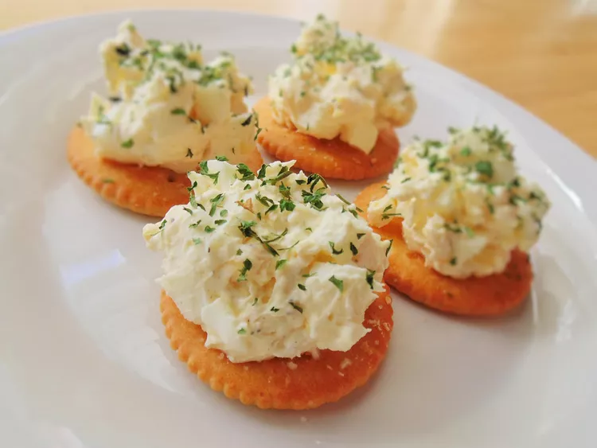

Polish Egg Salad

Description
This creamy style egg salad is quite common in Poland. It has a similar consistency as egg salad with mayo but it is made with cream cheese. Lovely in a sandwich with fresh cress.
Ingredients
- 1 (8 ounce) package cream cheese, softened
- 1 tablespoon butter, softened, or more to taste
- 4 hard-boiled eggs, chopped
- 4 hard-boiled eggs, chopped
- salt and ground black pepper to taste
- 1 tablespoon chopped fresh parsley, or to taste
Steps for making the Dish
- Combine cream cheese and butter in a bowl and mash with a fork.
- If mixture is too thick, add more softened butter.
- Mix in eggs and onion.
- Season with salt and pepper.
- serve with parsley.